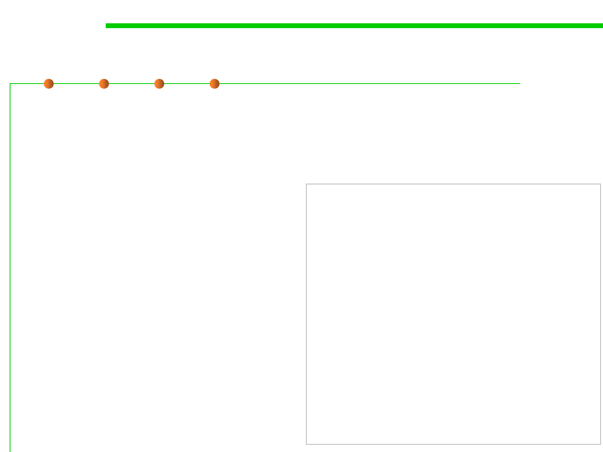

7.3 Assertions and Defensive Programming
Use Assertions for pre-/post- conditions
▪ If the variables latitude, longitude, and elevation were coming
from an external source, invalid values should be checked and
handled by error handling code rather than assertions.
▪ If the variables are coming from a
trusted, internal source, however, float latitude;
and the routine’s design is based
float longitude;
float elevation;
on the assumption that these
values will be within their valid
ranges, then assertions are
appropriate.
//Preconditions
assert latitude>=-90 && latitude<=90;
assert longitude>=0 && longitude<360;
assert elevation>=-500 && elevation<=75000;
……
//Postconditions
assert Velocity>=0 && Velocity <= 600
//return value
return Velocity;